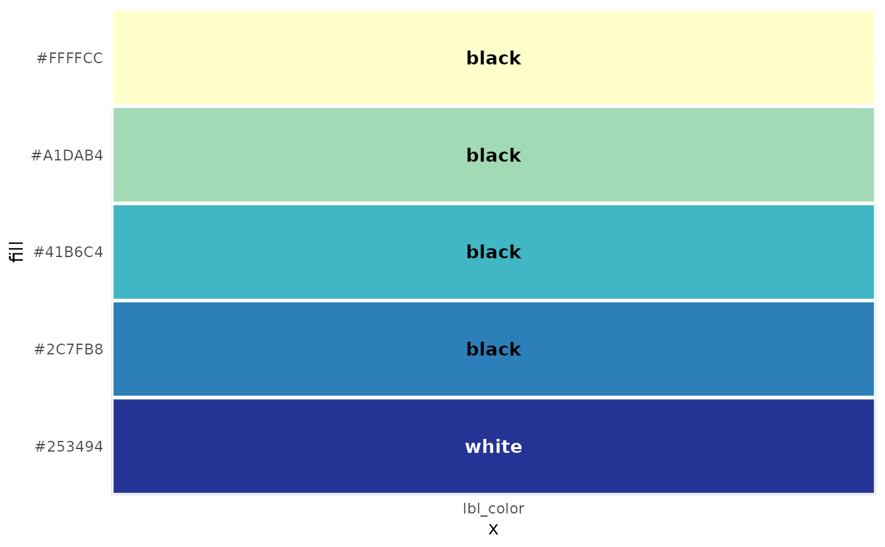
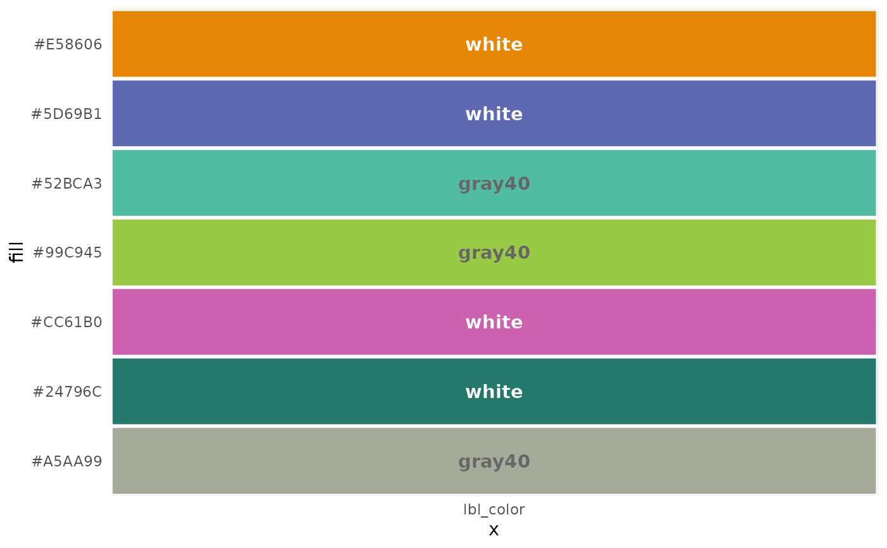
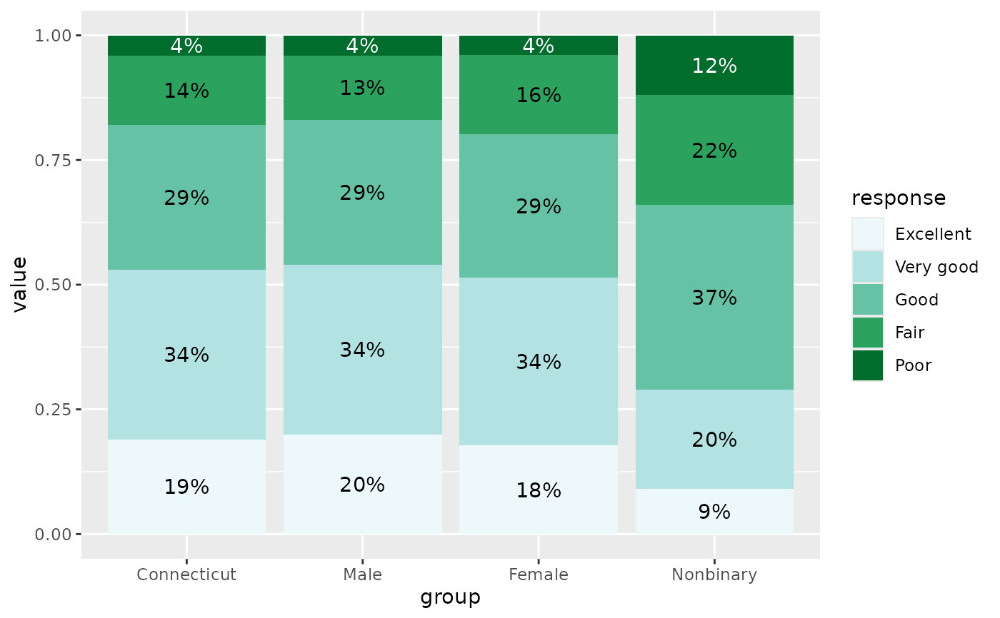

This is a set of utility functions and classes for a situation that I too often gloss over: when making a chart with different fill colors (such as stacked bars with a sequential palette), it can be good to vary the label color to maintain good contrast between the background and foreground. For example, the ColorBrewer palettes often go from such a dark color to such a light color that black or dark gray labels won't be visible over the darkest bar, and white or light gray labels won't be visible over the lightest bar. This helps prepare for that by testing the contrast between a palette (presumably bar fill colors) and a light and dark option (presumably label text on those bars).
A contrast ratio is calculated by colorspace::contrast_ratio according to the WCAG algorithm, and the minimum ratio defaults to 4.5 based on their accessibility guidelines. If verbose is true and any combination of palette color and label colors fails to meet this minimum, you'll get a message letting you know. For example, using medium gray colors for both dark and light labels is likely to lead to a situation where neither the dark nor the light label color would have enough contrast over the palette.
mutate_contrast takes this a step further, working with a data frame to determine label colors from a factor column (or a column that can become a factor).
plot methods create ggplot plots as visual references of the fill and label colors. For cc_df objects, there will be two columns of fill + label combinations with their ratios and a star for the label color with the greatest contrast. For cc_vec objects, this is a simplified version giving just one column of fills and the label colors with greatest contrast, but no ratio information.
Usage
contrast_colors(
pal,
dark = "black",
light = "white",
n = 5,
min_ratio = 4.5,
verbose = TRUE,
labels_only = TRUE,
reverse = FALSE,
plot = FALSE
)
mutate_contrast(
data,
col,
pal,
dark = "black",
light = "white",
min_ratio = 4.5,
verbose = TRUE,
reverse = FALSE
)
# S3 method for class 'cc_df'
plot(x, ...)
# S3 method for class 'cc_vec'
plot(x, ...)
# S3 method for class 'cc_df'
print(x, ...)
# S3 method for class 'cc_vec'
print(x, ...)Arguments
- pal
String: either a vector of colors (either named R colors or hex codes), or the name of a palette from the
RColorBrewer,rcartocolor, orviridisLitepackages. If the name of a palette, the respective function will be called to fetch the vector of hex codes.- dark
String giving a single valid color to use as the dark label option, either a named R color or hex code. Default: 'black'
- light
String giving a single valid color to use as the light label option, either a named R color or hex code. Default: 'white'
- n
For
contrast_colors, ifpalis the name of a palette, its corresponding palette will havencolors. Ignored otherwise. Formutate_contrast, this is determined by the number of levels incol. Default: 5- min_ratio
Minimum contrast ratio, below which a pair of colors is deemed low-contrast. If
verboseis true and any sets of colors fail to meet this minimum, you'll get a diagnostic message letting you know. Default: 4.5- verbose
Logical, whether to print diagnostic info if there are issues with your contrast ratios, Default: TRUE
- labels_only
Logical, whether to return only labels, i.e. just a vector of the dark or light values, depending on which had the greatest contrast for each color in
pal, or the full data frame used for calculations, including all ratios. Default: TRUE- reverse
Boolean: if
TRUE, palette will be reversed. This mostly only matters formutate_contrast, as it determines which colors are associated with which factor levels. Default: FALSE- plot
Logical, whether to print a
ggplotswatch of tiles filled withpaland labels, usingplotmethods for the appropriate class. Doesn't change the return value. Default: FALSE- data
A data frame
- col
Bare name of a column in
xalong which the palette will be mapped. If not already a factor, it will be coerced into one with levels in the same order in which they appear.- x
For methods: An object returned by
contrast_colors- ...
Not currently used
Value
For
contrast_colors: Iflabels_only, a named character vector of colors, either the value ofdarkorlight, giving the highest contrast ratio for each value ofpal. This will be the same length aspal(orn, if you gavepalas the name of a palette to retrieve), and the names will be the fill colors. Otherwise, a data frame with the same number of rows as colors inpaland 6 columns of info about them, including fill and label colors (see examples).If
labels_only = FALSE, will also have the classescontrast_colorsandcc_dfIf
labels_only = TRUE, will also have the classescontrast_colorsandcc_vec.
For
mutate_contrast, the original data frame given asdata, with columns added for fill (according topalette) and label color.
Examples
# using a pre-defined palette
qual_pal <- c("#009B9E", "#DAA51B", "#C75DAB", "#898DA7", "#2A39A7")
contrast_colors(qual_pal)
#> #009B9E #DAA51B #C75DAB #898DA7 #2A39A7
#> "black" "black" "black" "black" "white"
# returning a data frame
contrast_colors(qual_pal, labels_only = FALSE)
#> fill dark light max lbl_color low_contrast
#> 1 #009B9E 6.18 3.40 6.18 black FALSE
#> 2 #DAA51B 9.38 2.24 9.38 black FALSE
#> 3 #C75DAB 5.58 3.76 5.58 black FALSE
#> 4 #898DA7 6.43 3.27 6.43 black FALSE
#> 5 #2A39A7 2.24 9.37 9.37 white FALSE
# printing the plot, brewer palette
contrast_colors("YlGnBu", plot = TRUE)

#> #FFFFCC #A1DAB4 #41B6C4 #2C7FB8 #253494
#> "black" "black" "black" "black" "white"
# not enough contrast, carto palette
contrast_colors("Vivid", n = 7, dark = "gray40", plot = TRUE)
#> Warning: ! At least one set of colors failed to meet the minimum contrast threshold of
#> 4.5.
#> ℹ Consider adjusting the palette and/or using more distinct label colors.
#> • For #E58606, color #1, ratio to `dark` is 2.12; ratio to `light` is 2.71.
#> • For #52BCA3, color #3, ratio to `dark` is 2.48; ratio to `light` is 2.31.
#> • For #99C945, color #4, ratio to `dark` is 2.95; ratio to `light` is 1.95.
#> • For #CC61B0, color #5, ratio to `dark` is 1.61; ratio to `light` is 3.56.
#> • For #A5AA99, color #7, ratio to `dark` is 2.41; ratio to `light` is 2.38.

#> #E58606 #5D69B1 #52BCA3 #99C945 #CC61B0 #24796C #A5AA99
#> "white" "white" "gray40" "gray40" "white" "white" "gray40"
# Use mutate_contrast to get color information attached to your data frame
library(ggplot2)
health <- self_rated_health |>
mutate_contrast(col = response, pal = "BuGn")
# use same palette for fill scale
# lbl_color column has colors to use, so can use identity scale
ggplot(health, aes(x = group, y = value, fill = response)) +
geom_col(position = position_fill(reverse = TRUE)) +
geom_text(aes(label = percent100(value), group = group, color = lbl_color),
position = position_fill(reverse = TRUE, vjust = 0.5)
) +
scale_fill_brewer(palette = "BuGn") +
scale_color_identity()

# could actually use scale_fill_identity as well, since fill colors are in data,
# but it becomes messy when you want a legend
# now use a manual palette, and give the same set of colors to scale_fill_manual
manual_pal <- c("#005CE7", "#9C45C7", "#CC6697", "#E69259", "#F2D25C")
health_w_pal <- self_rated_health |>
mutate_contrast(col = response, pal = manual_pal)
ggplot(health_w_pal, aes(x = group, y = value, fill = response)) +
geom_col(position = position_fill(reverse = TRUE)) +
geom_text(aes(label = percent100(value), group = group, color = lbl_color),
position = position_fill(reverse = TRUE, vjust = 0.5)
) +
scale_fill_manual(values = manual_pal) +
scale_color_identity()